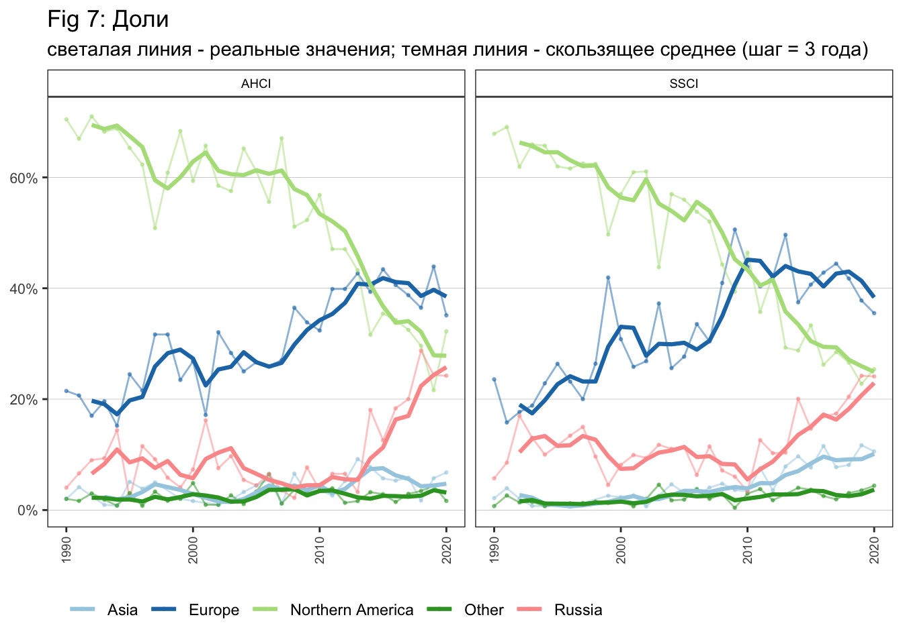

II. IMPACT OF PIBLICATIONS
1. Средний импакт
2. Страны и динамика их цитируемости
Таблица с основными странами, разделение на 3 периода и следующие показатели в каждом периоде показать: кол-во публикаций, MNSC, средняя цитируемость на статью.
Важно: статьи в соавторстве приписаны как +1 к стране каждого соавтора.
n - число статей I - период 1990-2000 / II - период 2001-2010 / III - период 2011-2020
Table 1: Страны и динамика их цитируемости
3. Регионы: доли статей в топах
Средние значения показателей вхождения в топ по годам для регионов на отдельных графиках – доли статей в топе 1, 10 и 25. Три графика – линии это для регионов.
проверить порядок фильтрации region везде где нет группы region == Unknown

4. Страны: динамика вхожденя в топ
Таблица с основными странами, разделение на 3 периода и следующие показатели в каждом периоде показать: кол-во публикаций, кол-во статей в топе 1, 10 и 25 (в скобках доли статей в топе).
Table 2: Страны: динамика вхожденя в топ
5. Группы институций: показатели 5/10/20 лучших
Средние значения показателей по группам институций в динамике: 5,10,20 лучших, все остальные. Показатели MNSC, средняя цитируемость на статью. Линиями на графиках, а группы – это 5,10,20 лучших.
Важно: 5 лучших в 1990 и 1991 это не обязательно одни и те же институции. В графиках показаны топы институций в каждый конкретный год. Фракционализация не производилась. Лучших по какому показателю? Рисунки построены как лучшие по количеству статей в каждый конкретный год.

6. Доли регионов в самом лучшем аутпуте
Взять только 25% самых цитируемых публикаций в SSCI и в AHCI по отдельности в каждый из годов. График с долями регионов в самом цитируемом аутпуте разными линиями. Фракционализировать по странам. Подумать, как наглядно такое показать для стран?
Важно: без фракционализации. Оставлены все строки по переменной top_25 == 1

7. Доли регионов в Q1
Взять только статьи в журналах 1 квартиля в каждый из год (только с 2000 года период). Показать доли регионов по годам разными линиями. Фракционализировать по странам. Подумать, как наглядно такое показать для стран?
Важно: без фракционализации.